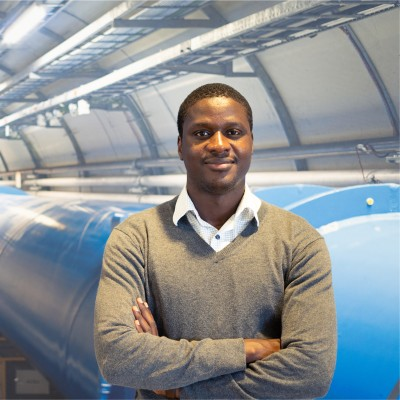

Fig. 1 — About
From proton collisions to production models
I hold a PhD in particle physics (CERN/ATLAS, 2020) and am currently a Goldhaber Distinguished Fellow at Brookhaven National Laboratory, based at CERN — a fellowship awarded to fewer than five early-career scientists per year worldwide. Since April 2025 I serve as Convener of the ATLAS Higgs Light Resonance Search working group, a two-year mandate coordinating searches across ~20 scientists and multiple institutes.
The day-to-day of that work is quantitative research: statistical inference on high-dimensional data, machine-learning pipelines that replaced thousands of hand-tuned fits, time-series calibration delivered at sub-percent precision, and honest uncertainty quantification on every number we publish. In 2026 I was selected to give the plenary review of Higgs boson searches at LHCP (Paris) on behalf of the ATLAS, CMS and LHCb collaborations — 500+ scientists in the room.
I am now moving this toolkit into quantitative finance and data science, where the problems rhyme: weak signals, overwhelming noise, non-stationary processes, and decisions that are only as good as their error bars.
Fig. 2 — Selected work
Projects
Probabilistic day-ahead electricity price forecasting for the Swiss market on public ENTSO-E data. Leak-free feature engineering enforced by unit tests, walk-forward backtesting with block-bootstrap confidence intervals, and LightGBM quantile regression evaluated on calibration — not just point error.
time seriesquantile regressionbacktestingLightGBMCI/CD
Market anomaly detection ○ next up
Applying resonance-search techniques from the LHC — likelihood ratios, multivariate classifiers, bump hunting — to detect regime changes and anomalous events in financial market data.
anomaly detectionstatistical inference
Fig. 3 — Record
Research, publications & talks
- Plenary: “Search for new scalars and BSM Higgs decays” — on behalf of ATLAS, CMS & LHCb
LHCP 2026, Paris · invited, 500+ attendees
- “Search for a new scalar decaying into new spin-1 bosons in four-lepton final states” — analysis contact & main analyser, first ATLAS result on this signature
Phys. Lett. B 865 (2025) 139472 · arXiv:2410.16781
- “Search for invisible Higgs-boson decays in events with VBF signatures” — analysis contact
JHEP 08 (2022) 104 · ATLAS Collaboration
- ATLAS luminosity calibration at sub-percent precision (vdM/LRE); AC-LGAD detector R&D with BNL & Brown
IEEE NSS/MIC 2022 · RD50 Workshop, CERN · INSPIRE-HEP · ORCID
- Six further invited talks at international conferences; co-supervision of graduate students from three continents
2020 – 2026
Fig. 4 — Beyond research
Teaching & scientific capacity building
I am one of very few particle physicists from Senegal, and I take that seriously. With Physics Without Frontiers (ICTP), I co-organised training visits to four Senegalese universities, and I co-founded a national programme in nuclear and particle physics in Senegal in partnership with CERN and Brookhaven National Laboratory.
I lecture at the African School of Physics, instruct at the CERN Summer Student Programme, and currently co-supervise four graduate students from Stanford, South Africa and Morocco.